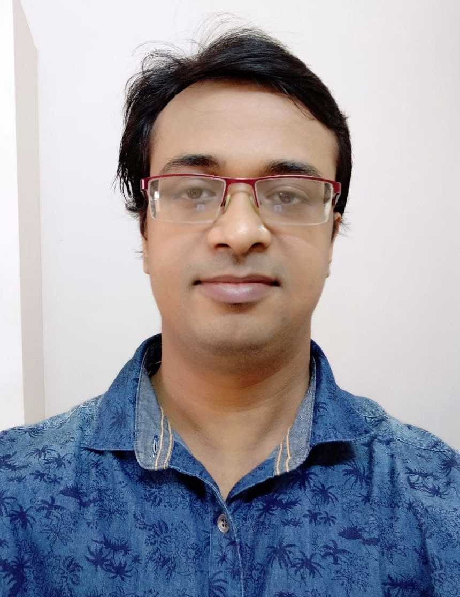

Welcome to my GitHub home page 
Dr. Arjun Paul
Assistant Professor (Grade-I),Department of Mathematics and Statistics,
Indian Institute of Science Education and Research Kolkata,
Mohanpur - 741264, District - Nadia,
West Bengal, India.
Office: #328, Academic Complex.
Email: #
Mobile:
About Me
I am an Assistant Professor Grade-I in the Department of Mathematics and Statistics of the Indian Institute of Science Education and Research Kolkata. Before joinin here, I was an Assistant Professor in the Department of Mathematics in Jadavpur University. Before that, I was a post-doctoral fellow in Mathematics in the International Centre for Theoretical Sciences, Bengaluru, India. Before that I was Post Doctoral Fellow in the Department of Mathematics of IIT Bombay (February 22, 2019 to December 30, 2020) and in the Department of Mathematics at IMSc, Chennai, India (August 06, 2018 to February 21, 2019). I did my Ph.D. in Mathematics from the Tata Institute of Fundamental Research, Mumbai, India; my Ph.D. thesis advisor is Prof. Indranil Biswas. I did B.Sc. (Honours) (2007-2010) and M.Sc. (2010-2012) in Mathematics from Jadavpur University, Kolkata, West Bengal, India.
Research Interests
I am interested in studying algebraic geometry and differential geometry. My research interests includes: equivariant bundles, connections on vector bundles and principal bundles, moduli spaces and stacks of bundles, Higgs bundles, system of Hodge bundles, opers, fundamental group schemes, derived category, Bridgeland stability etc.
Other Interests
Apart from Mathematics, I am interested in...
1. Computer Programming.
2. Photography and Painting.